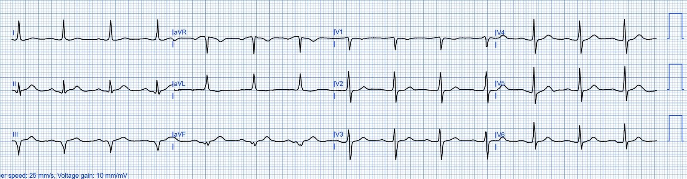
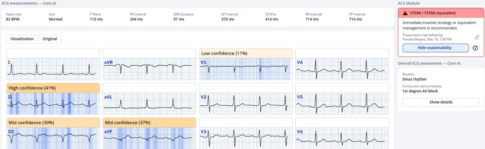
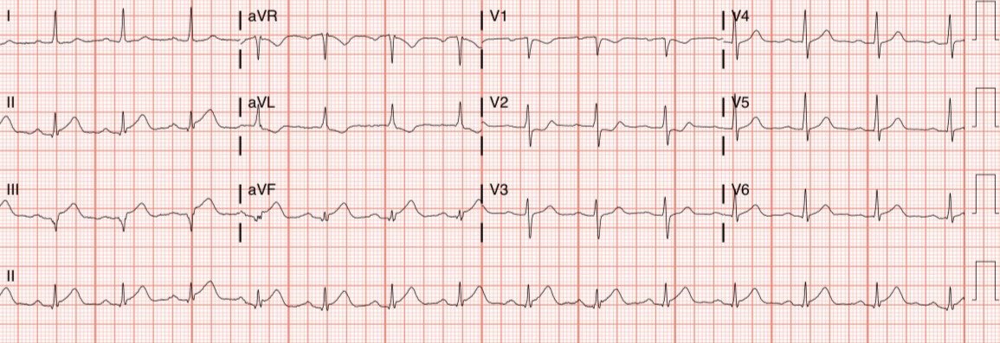
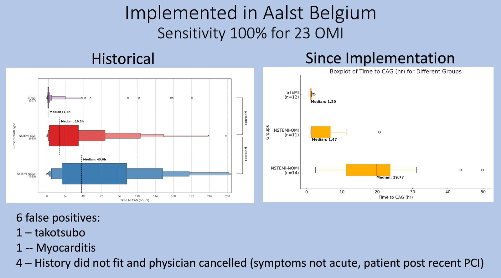
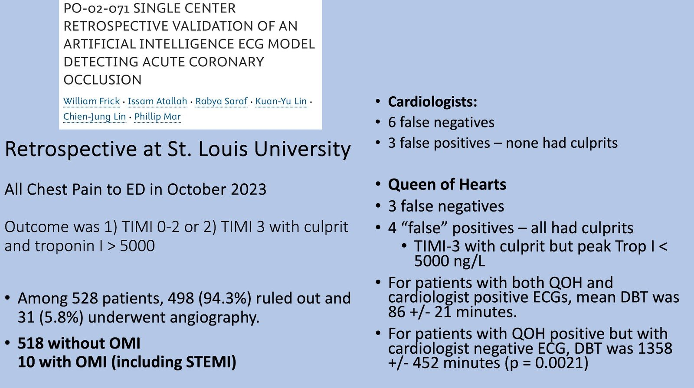
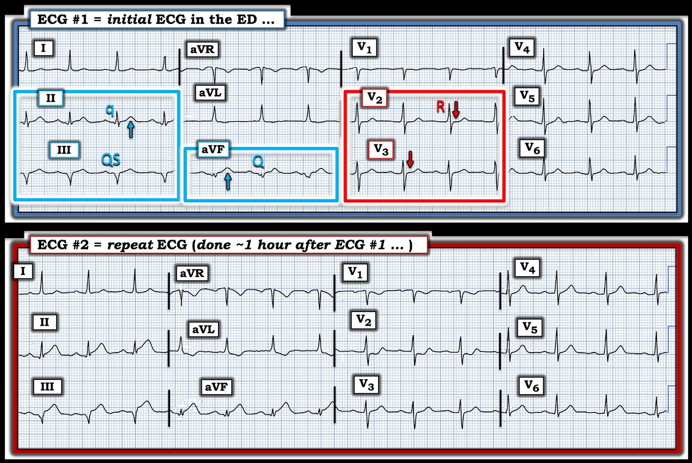

23/03/2025 — Khi chăm sóc hội chứng vành cấp bị chậm trễ rất nhiều, “các chỉ số STEMI” vẫn có thể hoàn hảo. Và Queen of Hearts đặc hiệu đến mức nào?
Bản dịch tiếng Việt của bài "When ACS care is very delayed, “STEMI metrics” can be perfect. And how specific is Queen of Hearts?" – Dr. Smith’s ECG Blog. Giữ nguyên toàn bộ 8 hình ảnh của bản gốc.
Viết bởi Pendell Meyers, ca bệnh do một người giấu tên gửi, có phần bổ sung của Smith
Một người đàn ông ở độ tuổi 40 bị đau ngực cấp và đã gọi đội cấp cứu ngoài viện (EMS).
Đội EMS đến nơi và ghi điện tâm đồ này:


Đây là kết quả đọc điện tâm đồ của PMcardio Queen of Hearts:


Nếu bạn nghĩ Queen of Hearts nhạy đến vậy là vì phải hy sinh độ đặc hiệu, thì bạn đã nhầm.
Hãy xem bài báo này, trong đó việc dùng Queen sẽ làm giảm đáng kể số trường hợp dương tính giả:
Artificial Intelligence Driven Prehospital ECG Interpretation for the Reduction of False Positive Emergent Cardiac Catheterization Lab Activations: A Retrospective Cohort Study (Đọc điện tâm đồ trước viện bằng trí tuệ nhân tạo nhằm giảm số lần kích hoạt phòng thông tim cấp cứu dương tính giả: một nghiên cứu đoàn hệ hồi cứu)
Còn nhiều dữ liệu khác cho thấy Queen of Hearts vừa nhạy hơn VỪA đặc hiệu hơn (xem 3 nghiên cứu ở cuối bài)
Ca bệnh tiếp diễn
Bác sĩ khoa cấp cứu (ED) xem điện tâm đồ trước viện lúc phân loại (triage), đánh giá là “Không có STEMI” và không cho ghi lại điện tâm đồ.
Bệnh nhân được xếp ra phòng chờ.
Khoảng một giờ sau, một điện tâm đồ khác được ghi:


Lúc này phòng thông tim (cath lab) mới được kích hoạt vì STEMI.
Thông tim được thực hiện khoảng 4 giờ sau lần tiếp xúc y tế đầu tiên (không rõ thời điểm khởi phát triệu chứng), cho thấy tắc RCA, cần lấy huyết khối và PCI.
Smith: Một sự chậm trễ như vậy quan trọng đến mức nào? Hãy xem hình minh họa này từ JAMA 2005, của các tác giả huyền thoại Gregg Stone và Harvey White. Bạn có thể đọc phần tóm tắt (hoặc dĩ nhiên là toàn văn bài báo) qua đường link kèm theo. Rất thú vị.

TÓM TẮT: Tính từ lúc khởi phát triệu chứng, chậm trễ 2 giờ, từ giờ thứ 2 đến giờ thứ 4, làm mất 60% lợi ích giảm tử vong của tái tưới máu
Gersh BJ, Stone GW, White HD, Holmes DR Jr. Pharmacological facilitation of primary percutaneous coronary intervention for acute myocardial infarction: is the slope of the curve the shape of the future? JAMA [Internet] 2005;293(8):979–86. Có tại: http://www.ncbi.nlm.nih.gov/entrez/query.fcgi?cmd=Retrieve&db=PubMed&dopt=Citation&list_uids=15728169
Các “chỉ số STEMI” (STEMI metrics) của bệnh nhân này phản ánh một thời gian đến thông tim “thành công”, trong vòng 90 phút kể từ điện tâm đồ STEMI+. Vậy là chẩn đoán cuối cùng là STEMI, và không hề có câu hỏi hay phản hồi nào về việc liệu tắc động mạch vành cấp có thể được nhận ra sớm hơn hay không.
Nếu tôi là bệnh nhân, tôi sẽ muốn được can thiệp sớm hơn 2 giờ, bạn có muốn vậy không?
Bạn sẽ muốn điều gì? Phải chăng bệnh chỉ đáng kể khi nó đã đủ dễ để thấy trên điện tâm đồ mà không cần đào tạo chuyên sâu? Bệnh là đoạn ST? hay bệnh là tắc động mạch vành cấp?
Trong nghiên cứu của chúng tôi dưới đây, ở những bệnh nhân thực sự có STEMI tại một thời điểm nào đó trên điện tâm đồ, mô hình AI PMCardio Queen of Hearts có thể phát hiện OMI sớm hơn tiêu chuẩn STEMI với trung vị 3 giờ.
(Và hơn nữa, cô ấy còn phát hiện được nhiều OMI chưa bao giờ đạt tiêu chuẩn STEMI)
Herman, Meyers, Smith, và cs. International Evaluation of an Artificial Intelligence-Powered Electrocardiogram Model Detecting Acute Coronary Occlusion Myocardial Infarction. Tạp chí EHJ DH, 2023.
https://doi.org/10.1093/ehjdh/ztad074 (đường link tới bài báo trên)
McLaren và cs. Missing Occlusions: Quality gaps for ED patients with Occlusion MI (Bỏ sót tắc mạch: những khoảng trống về chất lượng đối với bệnh nhân khoa cấp cứu bị nhồi máu cơ tim do tắc).
Thêm về độ đặc hiệu của Queen of Hearts:
1)


Độ nhạy hoàn hảo, và bạn có thể thấy các trường hợp dương tính giả ở phần dưới của slide
2)


Hãy nhìn các trường hợp dương tính giả ở bên phải:
Với bác sĩ tim mạch, không trường hợp dương tính giả (FP) nào có tổn thương thủ phạm.
Với Queen, cả 4 trường hợp FP đều có tổn thương thủ phạm, nhưng troponin không đủ cao để thỏa định nghĩa kết cục OMI rất chặt chẽ này, vốn đòi hỏi đỉnh troponin I độ nhạy cao (hs troponin I) ít nhất 5000 ng/L.
3)
https://herzmedizin.de/fuer-aerzte-und-fachpersonal/kongresse/dgk-jahrestagung-2025/-vor–kongressprogramm/wissenschaftliches-programm/koronare_herzerkrankungen/v1146.html (chương trình khoa học Hội nghị thường niên DGK 2025 — bệnh mạch vành)
Artificial intellingence based detection of acute coronary occlusion compared to STEMI criteria – External validation study in a consecutive all-comer German chest pain unit cohort. (Phát hiện tắc động mạch vành cấp dựa trên trí tuệ nhân tạo so với tiêu chuẩn STEMI – nghiên cứu thẩm định ngoài trên một đoàn hệ liên tiếp, không chọn lọc tại một đơn vị đau ngực ở Đức.)
Trong phân tích ROC, mô hình AI có diện tích dưới đường cong là 0.978 trong phát hiện tắc động mạch vành cấp (ACO) (xem C). Độ nhạy của mô hình là 70.2%, độ đặc hiệu là 98.5%. Điều này cho giá trị tiên đoán âm là 99.2%. Tiêu chuẩn STEMI đạt diện tích dưới đường cong 0.92. Độ nhạy tương ứng là 28.8%, còn độ đặc hiệu là 93.7%. Giá trị tiên đoán âm của tiêu chuẩn STEMI là 98.1%.
Trong phân nhóm bệnh nhân nguy cơ thấp đã được loại trừ bằng thuật toán hs-cTnT (n=2999), mô hình AI cho kết quả dương tính giả ở 0.7% (n=20, độ đặc hiệu: 99.3%) số trường hợp, so với 5% (n=150, độ đặc hiệu: 95%) khi dùng tiêu chuẩn STEMI.

===================================
BÌNH LUẬN CỦA TÔI, bởi KEN GRAUER, MD (23/3/2025):
===================================
Dù thông tin về ca hôm nay còn hạn chế — “câu trả lời” lẽ ra phải hiển nhiên chỉ trong vài giây khi nhìn điện tâm đồ ban đầu (bản ghi TRÊN CÙNG mà tôi đã sao lại và đánh dấu trong Hình 1) của ca hôm nay. Người đàn ông ở độ tuổi 40 này bị CP cấp (đau ngực — Chest Pain), nặng đến mức khiến ông phải gọi EMS — đã bị một OMI dưới–sau mà bắt buộc phải coi là cấp tính cho đến khi chứng minh được điều ngược lại.
- Biết chính xác hơn khi nào cơn CP của bệnh nhân bắt đầu — và cơn CP nặng đến đâu vào thời điểm ghi điện tâm đồ #1 (cũng như biết bệnh nhân có tiền sử bệnh tim hay không và điện tâm đồ “nền” của ông trông ra sao) — sẽ giúp chúng ta xác định tốt hơn thời điểm khởi phát nhiều khả năng của OMI.
- Dù vậy — có một số dấu hiệu trên điện tâm đồ ban đầu của bệnh nhân này trông mới xuất hiện, nếu không muốn nói là cấp tính.
Vì sao bệnh nhân này KHÔNG nên bị đưa ra phòng chờ:
Sau khi nghe bệnh sử và xem điện tâm đồ ban đầu ở Hình 1 — bệnh nhân hôm nay đã bị đưa ra phòng chờ. Chúng ta may mắn vì bệnh nhân này không bị ngừng tim khi đang ở phòng chờ. Trái lại (như Bác sĩ Meyers đã nêu) — các dấu hiệu điện tâm đồ đáng lo ngại đã hiện rõ trên điện tâm đồ ban đầu.
- “Mắt” tôi lập tức bị hút vào chuyển đạo V2 và V3 (trong hình chữ nhật ĐỎ ở điện tâm đồ #1). Ở một bệnh nhân có CP mới — vùng chuyển tiếp sớm (với sóng R đã chiếm ưu thế ngay ở chuyển đạo V2) — kết hợp với việc mất đi đoạn ST hơi dốc lên nhẹ nhàng bình thường ở các chuyển đạo V2,V3 (thay bằng ST dẹt — như các mũi tên ĐỎ làm nổi bật) là chẩn đoán OMI thành sau cấp.
- Sóng Q nhồi máu thấy ở từng chuyển đạo thành dưới (rõ nhất ở chuyển đạo III). Xét đến biên độ QRS khiêm tốn ở các chuyển đạo thành dưới — tính cấp tính được gợi ý bởi các sóng T “đồ sộ” không tương xứng ở chuyển đạo II và aVF (các mũi tên XANH ở những chuyển đạo này). Ngay cả khi không có ST chênh xuống soi gương ở chuyển đạo aVL — ở bệnh nhân có CP mới này, các dấu hiệu trên là chẩn đoán OMI thành dưới cấp.
- Điểm MẤU CHỐT: Nếu còn nghi ngờ liệu các dấu hiệu điện tâm đồ trên có mang tính chẩn đoán hay không — thì lẽ ra phải ghi lại điện tâm đồ #1 trong vòng 15-20 phút, thay vì đưa bệnh nhân ra phòng chờ và đến một giờ sau mới ghi lại điện tâm đồ.


Điện tâm đồ ghi lại:
Như Bác sĩ Meyers đã nêu — so sánh từng chuyển đạo một giữa điện tâm đồ #2 với điện tâm đồ #1 cho thấy không còn nghi ngờ gì về chẩn đoán STEMI dưới-sau đang tiến triển cấp tính.
- Điểm cần học: Cách TỐT NHẤT để cải thiện khả năng sớm nhận ra những dấu hiệu tinh tế, kém rõ ràng nhưng quan trọng, là quay lại điện tâm đồ ban đầu và so sánh từng chuyển đạo một xem điện tâm đồ ban đầu đã tiến triển ra sao. Việc các sóng T lớn không tương xứng ở chuyển đạo II và aVF của bản ghi ban đầu là sóng T tối cấp nay đã được chứng minh qua những gì sóng ST-T ở các chuyển đạo này đã trở thành. Ngay cả đoạn ST thẳng đuỗn tinh tế ở chuyển đạo III trên điện tâm đồ ban đầu cũng là điềm báo trước của ST chênh lên rõ rệt hiện thấy ở chuyển đạo III trên điện tâm đồ #2.
- Tương tự — đoạn ST thẳng đuỗn tinh tế-nhưng-có-thật được làm nổi bật ở chuyển đạo V2 của điện tâm đồ #1 — nay đã tiến triển thành đoạn ST dốc xuống trông cấp tính hơn trên điện tâm đồ #2.
- Thực tế đáng buồn: Giống như chúng ta đã thấy trong bài đăng ngày 17 tháng Ba năm 2025 gần đây trên Dr. Smith’s ECG Blog — “kiểm soát chất lượng” của ca hôm nay sẽ coi việc bác sĩ nhận ra tiêu chuẩn STEMI trên điện tâm đồ #2 là một cách đọc “đúng” — trong khi lẽ ra tiêu chuẩn STEMI không bao giờ có cơ hội xuất hiện, vì phòng thông tim lẽ ra phải được kích hoạt ngay lập tức khi bác sĩ vừa nhìn thấy điện tâm đồ #1.